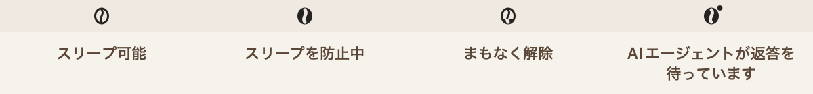
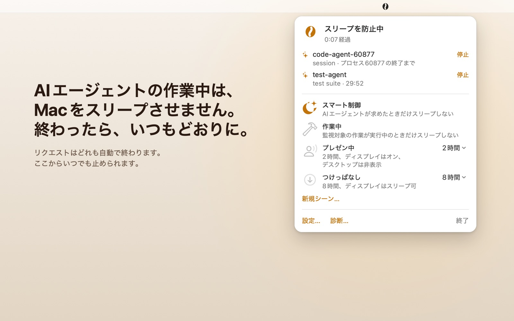
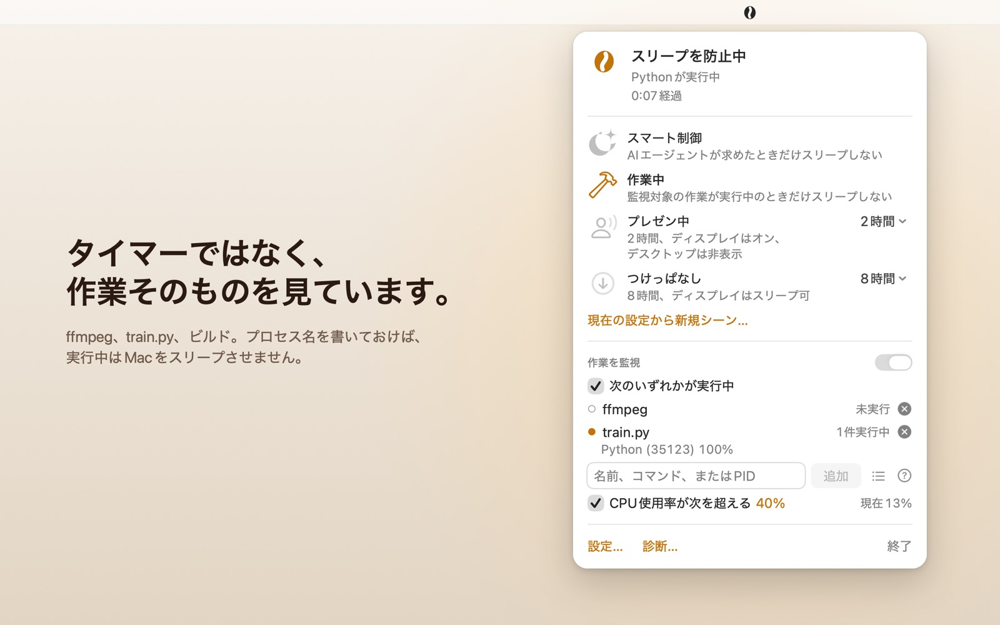
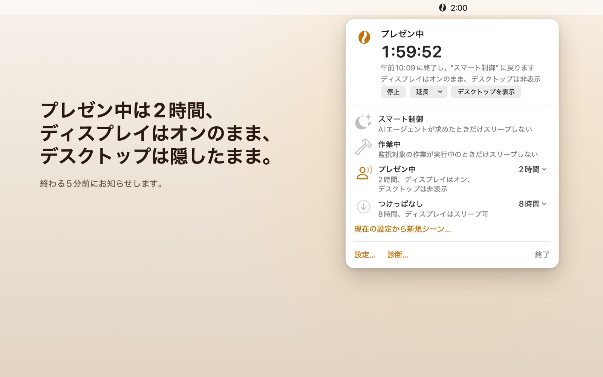
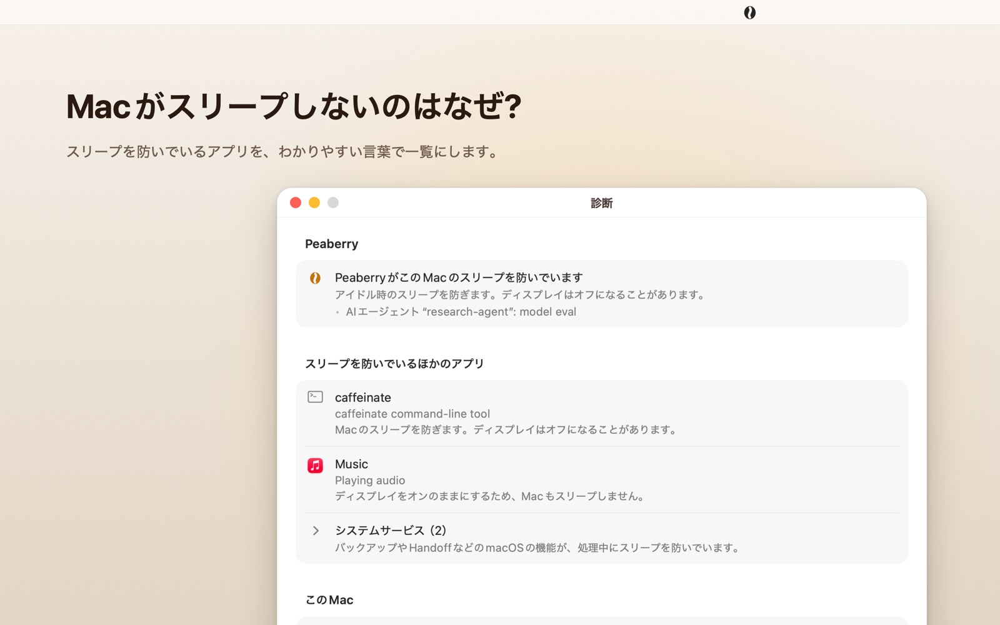
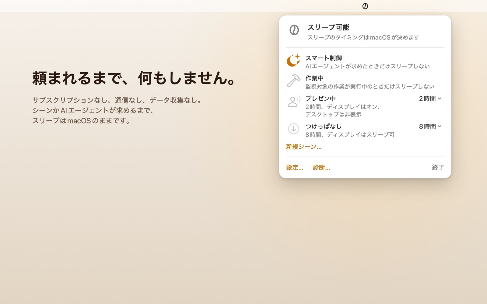

AIエージェントが作業している間、Macはスリープしません。
最後のエージェントが終われば、スリープはmacOSの設定どおりに戻ります。中断が怖くてスリープを切っておく必要はもうありません。誰もキーボードに触れていないせいで、作業が途中で止まることもありません。
Mac App Storeで近日公開
macOS 15以降、Appleシリコン搭載MacとIntel搭載Macに対応しています。

エージェントが自分で頼む
誰もキーボードに触れていないと、macOSはスリープします。長い作業をしているエージェントもキーボードには触れないので、Macはアイドル時間に達して作業の途中でスリープし、セッションも一緒に途切れます。Peaberryがあれば、エージェントは作業に必要な時間だけを自分でリクエストします。
# このビルドが動いている間だけ、Macのスリープを防ぐ
open "peaberry://hold?pid=$$&id=claude&reason=build" && ./build.sh
# シェルが終わればリクエストも終わる。解除の手間はなし- どのリクエストも自分で終わる
- リクエストは1つのプロセス、または分数（最長24時間）に結びつきます。エージェントがクラッシュしても、後片付けを忘れても、リクエストは必ず終わり、プロセスの終了から数秒で解除されます。
- 複数のエージェント、1台のMac
- 各エージェントは自分の名前で自分のリースを持ち、同時に16件まで持てます。同じ名前なら前のリクエストを置き換え、違う名前なら並んで存在します。どれか1つでも作業中なら、Macはスリープしません。
- スイッチを握るのはあなた
- エージェントにできるのはリクエストまでです。リクエストを許可するかどうかは“設定 › AIエージェント”のスイッチで決まり、どんなコマンドでもオンにはできません。あなたが決めるまでは、スマート制御での最初のリクエストだけを最長15分間通し、作業が無駄にならないようにします。パネルからそのまま停止することも、常に許可にすることもできます。どのリクエストにも、それぞれ“停止”ボタンがあります。
- 状態の確認は軽い
--briefは1行で答えます。--waitは何かが起きるまで（リクエストの終了、バッテリー残量の低下や設定した下限への到達、Peaberryの終了）待ってから、1行だけ出力します。1分間待ってもCPU時間は0.03秒でした。- バッテリーが尽きる前に区切る
- バッテリー駆動で残量が20%、または残り20分になると、状態を確認しに来たエージェントに、作業を区切りのいいところまで進めてリクエストを解除し、どこまで進んだかを伝えるよう知らせます。残量が10%（“設定 › 一般”で変えられる下限）まで下がると、PeaberryはAIエージェントのリクエストも含めてすべて解除し、バッテリーが切れる前にMacがスリープできるようにします。状態を確認しに来たエージェントには、すぐに作業を保存してあなたに伝えるよう知らせます。電源アダプタにつなげば、リクエストはまた有効になります。
エージェントを設定する
- “設定 › AIエージェント”を開き、“プロンプトをコピー”をクリックします。
- エージェントのチャットに貼り付けます。エージェントはPeaberryに同梱されたスキルファイルを読み、自分のやり方でインストールして、どこに置いたかを教えてくれます。ファイルを読めて、シェルコマンドを実行できるエージェントなら使えます。
- “ほかのプログラムからのpeaberry://経由のリクエストを許可”をオンにすると、作業が終わるまでリクエストが続きます。
スキルは、各セッションの最初に、エージェント自身のプロセスに結びついたリクエストを出すよう指示します。考えている間にMacがスリープすることはなく、セッションが終われば解除されます。Peaberryが動いていなければ、エージェントは手を出しません。アップデートで新しいスキルが届くと、エージェントは大きいバージョン番号に気づいて、手元のコピーを置き換えます。
$ /Applications/Peaberry.app/Contents/MacOS/Peaberry --brief
running=1 holding=1 scene=system holds=claude-1940,render:5380 agent-control=on warnings=none skill=5 age=3作業そのものを見張らせる
“作業中”シーンに切り替えると、指定したプロセスが動いている間、またはCPUが忙しい間、Macのスリープを防ぎます。作業が止まってから2分待ってスリープを許可するので、ジョブとジョブの間のすき間は数えません。
- 実際に動かしているものに一致
- プロセス名、
argv[0]、スクリプトのファイル名、PID、ワイルドカード。train.pyはpython3 /work/train.py --epochs 10に、python*はpython3.12に一致します。実行中のアプリから選ぶこともできます。 - 何に一致したかが見える
- パネルには一致したプロセスがPIDとCPUと一緒に並ぶので、ルールが効いているかを推測する必要はありません。
- 忙しいときだけ
- CPUのルールは全コアの15秒平均を、設定したしきい値と比べます。パネルにリアルタイムの値が出るので、ちょうどいいしきい値を選べます。
- 必要なときだけ調べる
- プロセスを一覧するのは、ルールが必要とするときだけです。スマート制御では、3秒ごとにシステムのCPUを読む以外に何もしません。
4つのシーン
同時に動くシーンは1つだけです。パネルでクリックすれば切り替わり、どのシーンも複製して自分用に変えられます。
-
スマート制御
デフォルトスリープはmacOSの設定どおり。Macのスリープを防ぐのは、AIエージェントのリクエストだけです。
-
作業中
作業の間指定したプロセスが動いている間、またはCPUが忙しい間はスリープを防ぎ、終わってからさらに2分待ちます。
-
プレゼン中
2時間ディスプレイはオンのまま。デスクトップは壁紙、グラデーション、または単色の背景で隠れます。
-
つけっぱなし
8時間ダウンロード、書き出し、バックアップなど、席を離れる作業に。ディスプレイはスリープしてもかまいません。

バッテリーを搭載したMacでは、シーンを電源アダプタ接続時だけ動くように設定できます。バッテリー使用中は、電源アダプタを外した瞬間からそのシーンはスリープを防ぎませんが、AIエージェントのリクエストは引き続き有効です。作業を監視するシーンでは、外部ディスプレイの接続中もスリープさせないようにできます。机で外部ディスプレイにつないだMacBook向けで、蓋を開けていても閉じていても働きます。Mac miniやMac Studioのように内蔵ディスプレイのないMacでは、この設定は適用されません。
時間制限のあるシーンは、終わる5分前に通知で知らせ、そのまま30分延長できます。グローバルなキーボードショートカットでも開始・停止できます（初期設定ではオフです）。
Macがまだ起きているのはなぜ?
あるいは、なぜスリープしたのか。設定の“診断”タブが、どちらの疑問にも1行ずつ答えます。
- Peaberry自身が何をしていて、どのルールやエージェントが頼んだのか。
- Macを起こしているほかのすべてのアプリ。システムサービスは1行にまとめます。
- スリープの予約があるかどうか、誰が予約したか。
- 電源とディスプレイの状態、最後にキーボードやマウスに触れてからの時間。
- どうやっても防げない唯一のケース：外部ディスプレイをつながずにMacBookの蓋を閉じたとき。
何も預けなくていい
- ネットワークなし
- このアプリにはネットワークへのアクセス権がまったくありません。万一接続しようとしても、macOSのサンドボックスが拒否します。
- データ収集なし
- 分析も、アカウントも、トラッキングもありません。App Storeのプライバシーラベルは“データの収集なし”です。プライバシーポリシー
- 追加課金なし
- サブスクリプションも、App内課金も、広告もありません。
- Macに軽い
- 豆が動いている間の負荷は1コアの約1.5%、スマート制御で待機中は約0.1%でした。メニューバーのアニメーションは設定でオフにできます。
スクリーンショット

エージェントのリクエストは1件ずつ1行になり、理由と“停止”ボタンが付きます。 
作業中：一致したプロセスと、そのPIDとCPU。 
プレゼン中：ディスプレイはオン、デスクトップは非表示、2時間。 
診断：Macを起こしているすべてのものと、その理由。 
スマート制御：エージェントが頼むまで、スリープはmacOSの設定どおり。
動作環境
- macOS
- macOS 15 Sequoia以降。
- Mac
- Appleシリコン搭載MacまたはIntel搭載Mac。ユニバーサルアプリです。
- 言語
- English、繁體中文、日本語、Español。
- 置き場所
- メニューバーにあり、Dockにアイコンは出ません。初回起動時に短いウェルカムウインドウが開きます。“ログイン時に開く”にチェックを入れたまま“完了”をクリックすると、ログイン項目に追加されます。
- アクセシビリティ
- VoiceOverはメニューバー項目の状態を読み上げます（例：“Peaberry、スリープ防止中”）。
- 制限
-
- 外部ディスプレイをつながずにMacBookの蓋を閉じると、Macはスリープします。App Storeのアプリでは、これを変えることはできません。
- Peaberryが防ぐのはアイドル時のスリープです。予約されたスリープは止められません。
- ほかのユーザ（rootなど）のプロセスは、名前でしか一致させられません。
サポート
質問、不具合の報告、要望はGitHubのissueトラッカーへどうぞ。Peaberryのソースコードは公開していません。このリポジトリにあるのは、このWebサイトとissueだけです。
プライバシーポリシーもご覧ください。
Mac App Storeで近日公開